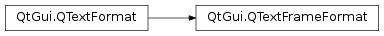

QTextFrameFormat¶
Inherited by: QTextTableFormat
Synopsis¶
Functions¶
- def
border() - def
borderBrush() - def
borderStyle() - def
bottomMargin() - def
height() - def
leftMargin() - def
margin() - def
padding() - def
pageBreakPolicy() - def
position() - def
rightMargin() - def
setBorder(border) - def
setBorderBrush(brush) - def
setBorderStyle(style) - def
setBottomMargin(margin) - def
setHeight(height) - def
setHeight(height) - def
setLeftMargin(margin) - def
setMargin(margin) - def
setPadding(padding) - def
setPageBreakPolicy(flags) - def
setPosition(f) - def
setRightMargin(margin) - def
setTopMargin(margin) - def
setWidth(length) - def
setWidth(width) - def
topMargin() - def
width()
Detailed Description¶
The
PySide2.QtGui.QTextFrameFormatclass provides formatting information for frames in aPySide2.QtGui.QTextDocument.A text frame groups together one or more blocks of text, providing a layer of structure larger than the paragraph. The format of a frame specifies how it is rendered and positioned on the screen. It does not directly specify the behavior of the text formatting within, but provides constraints on the layout of its children.
The frame format defines the
PySide2.QtGui.QTextFrameFormat.width()andPySide2.QtGui.QTextFrameFormat.height()of the frame on the screen. Each frame can have aPySide2.QtGui.QTextFrameFormat.border()that surrounds its contents with a rectangular box. The border is surrounded by aPySide2.QtGui.QTextFrameFormat.margin()around the frame, and the contents of the frame are kept separate from the border by the frame’sPySide2.QtGui.QTextFrameFormat.padding(). This scheme is similar to the box model used by Cascading Style Sheets for HTML pages.
The
PySide2.QtGui.QTextFrameFormat.position()of a frame is set usingPySide2.QtGui.QTextFrameFormat.setPosition()and determines how it is located relative to the surrounding text.The validity of a
PySide2.QtGui.QTextFrameFormatobject can be determined with thePySide2.QtGui.QTextFrameFormat.isValid()function.
-
class
PySide2.QtGui.QTextFrameFormat¶ -
class
PySide2.QtGui.QTextFrameFormat(fmt) -
class
PySide2.QtGui.QTextFrameFormat(QTextFrameFormat) Parameters: - fmt –
PySide2.QtGui.QTextFormat - QTextFrameFormat –
PySide2.QtGui.QTextFrameFormat
Constructs a text frame format object with the default properties.
Creates a new frame format with the same attributes as the
giventext format.- fmt –
-
PySide2.QtGui.QTextFrameFormat.Position¶ This enum describes how a frame is located relative to the surrounding text.
Constant Description QTextFrameFormat.InFlow QTextFrameFormat.FloatLeft QTextFrameFormat.FloatRight See also
-
PySide2.QtGui.QTextFrameFormat.BorderStyle¶ This enum describes different border styles for the text frame.
Constant Description QTextFrameFormat.BorderStyle_None QTextFrameFormat.BorderStyle_Dotted QTextFrameFormat.BorderStyle_Dashed QTextFrameFormat.BorderStyle_Solid QTextFrameFormat.BorderStyle_Double QTextFrameFormat.BorderStyle_DotDash QTextFrameFormat.BorderStyle_DotDotDash QTextFrameFormat.BorderStyle_Groove QTextFrameFormat.BorderStyle_Ridge QTextFrameFormat.BorderStyle_Inset QTextFrameFormat.BorderStyle_Outset See also
PySide2.QtGui.QTextFrameFormat.borderStyle()FrameBorderStyle
-
PySide2.QtGui.QTextFrameFormat.border()¶ Return type: PySide2.QtCore.qrealReturns the width of the border in pixels.
-
PySide2.QtGui.QTextFrameFormat.borderBrush()¶ Return type: PySide2.QtGui.QBrushReturns the brush used for the frame’s border.
-
PySide2.QtGui.QTextFrameFormat.borderStyle()¶ Return type: PySide2.QtGui.QTextFrameFormat.BorderStyleReturns the style of the frame’s border.
-
PySide2.QtGui.QTextFrameFormat.bottomMargin()¶ Return type: PySide2.QtCore.qrealReturns the width of the frame’s bottom margin in pixels.
-
PySide2.QtGui.QTextFrameFormat.height()¶ Return type: PySide2.QtGui.QTextLengthReturns the height of the frame’s border rectangle.
-
PySide2.QtGui.QTextFrameFormat.leftMargin()¶ Return type: PySide2.QtCore.qrealReturns the width of the frame’s left margin in pixels.
-
PySide2.QtGui.QTextFrameFormat.margin()¶ Return type: PySide2.QtCore.qrealReturns the width of the frame’s external margin in pixels.
-
PySide2.QtGui.QTextFrameFormat.padding()¶ Return type: PySide2.QtCore.qrealReturns the width of the frame’s internal padding in pixels.
-
PySide2.QtGui.QTextFrameFormat.pageBreakPolicy()¶ Return type: PySide2.QtGui.QTextFormat.PageBreakFlagsReturns the currently set page break policy for the frame/table. The default is
QTextFormat.PageBreak_Auto.
-
PySide2.QtGui.QTextFrameFormat.position()¶ Return type: PySide2.QtGui.QTextFrameFormat.PositionReturns the positioning policy for frames with this frame format.
-
PySide2.QtGui.QTextFrameFormat.rightMargin()¶ Return type: PySide2.QtCore.qrealReturns the width of the frame’s right margin in pixels.
-
PySide2.QtGui.QTextFrameFormat.setBorder(border)¶ Parameters: border – PySide2.QtCore.qrealSets the
width(in pixels) of the frame’s border.
-
PySide2.QtGui.QTextFrameFormat.setBorderBrush(brush)¶ Parameters: brush – PySide2.QtGui.QBrushSets the
brushused for the frame’s border.
-
PySide2.QtGui.QTextFrameFormat.setBorderStyle(style)¶ Parameters: style – PySide2.QtGui.QTextFrameFormat.BorderStyleSets the
styleof the frame’s border.
-
PySide2.QtGui.QTextFrameFormat.setBottomMargin(margin)¶ Parameters: margin – PySide2.QtCore.qrealSets the frame’s bottom
marginin pixels.
-
PySide2.QtGui.QTextFrameFormat.setHeight(height)¶ Parameters: height – PySide2.QtCore.qrealThis is an overloaded function.
Sets the frame’s
height.
-
PySide2.QtGui.QTextFrameFormat.setHeight(height) Parameters: height – PySide2.QtGui.QTextLengthSets the frame’s
height.
-
PySide2.QtGui.QTextFrameFormat.setLeftMargin(margin)¶ Parameters: margin – PySide2.QtCore.qrealSets the frame’s left
marginin pixels.
-
PySide2.QtGui.QTextFrameFormat.setMargin(margin)¶ Parameters: margin – PySide2.QtCore.qrealSets the frame’s
marginin pixels. This method also sets the left, right, top and bottom margins of the frame to the same value. The individual margins override the general margin.
-
PySide2.QtGui.QTextFrameFormat.setPadding(padding)¶ Parameters: padding – PySide2.QtCore.qrealSets the
widthof the frame’s internal padding in pixels.
-
PySide2.QtGui.QTextFrameFormat.setPageBreakPolicy(flags)¶ Parameters: flags – PySide2.QtGui.QTextFormat.PageBreakFlagsSets the page break policy for the frame/table to
policy.
-
PySide2.QtGui.QTextFrameFormat.setPosition(f)¶ Parameters: f – PySide2.QtGui.QTextFrameFormat.PositionSets the
policyfor positioning frames with this frame format.
-
PySide2.QtGui.QTextFrameFormat.setRightMargin(margin)¶ Parameters: margin – PySide2.QtCore.qrealSets the frame’s right
marginin pixels.
-
PySide2.QtGui.QTextFrameFormat.setTopMargin(margin)¶ Parameters: margin – PySide2.QtCore.qrealSets the frame’s top
marginin pixels.
-
PySide2.QtGui.QTextFrameFormat.setWidth(length)¶ Parameters: length – PySide2.QtGui.QTextLengthSets the frame’s border rectangle’s
width.
-
PySide2.QtGui.QTextFrameFormat.setWidth(width) Parameters: width – PySide2.QtCore.qrealThis is an overloaded function.
Convenience method that sets the width of the frame’s border rectangle’s width to the specified fixed
width.
-
PySide2.QtGui.QTextFrameFormat.topMargin()¶ Return type: PySide2.QtCore.qrealReturns the width of the frame’s top margin in pixels.
-
PySide2.QtGui.QTextFrameFormat.width()¶ Return type: PySide2.QtGui.QTextLengthReturns the width of the frame’s border rectangle.
© 2018 The Qt Company Ltd. Documentation contributions included herein are the copyrights of their respective owners. The documentation provided herein is licensed under the terms of the GNU Free Documentation License version 1.3 as published by the Free Software Foundation. Qt and respective logos are trademarks of The Qt Company Ltd. in Finland and/or other countries worldwide. All other trademarks are property of their respective owners.